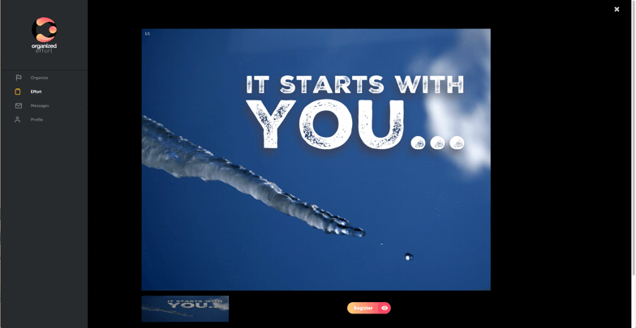

Last update on January 25, 2019.
This review includes some notes about UI implementation and some thoughts & suggestions about userflows and UX solutions.
Showing an 'Email' label and an 'Email' placeholder is confusing. There are 2 adjustemnts to choose from: 1) remove placeholder completely; 2) change it to 'youremail@example.com' or something like that.
Placeholder should disappear right when the input is focused.
Can we add rounded corners to Google button? Right now it pops out.
If social logins are of higher priority, then the corresponding buttons should be the first block users see and the email login should follow up.
Card shadow differs from shadows of cards inside the app.
Go to topToo many cluttered font styles make it hard to get the message.
Improve the texts. E.g. 'Welcome!' can be changes to the next line 'Thank you for joining us!'
Information can be presented not as a list rather than 4 blocks with icons, a heading and a useful description. Maybe some links to guide the newcomers.
Go to topChoosing 4 skills and then picking 4 interests looks like taking another round of picking 4 skills. To fix this we can use different colors for skills/interest like blue/orange. That way you will be sure you're moving forward. Another way is to change label to 'Proceed to interest' and then 'Proceed'.
Labels and inline selects should have the same size as buttons.
The other thing to consider is to move picking skills and project types (online/local) from the onboarding stage to filters on Browse screen. Later on this can be swapped back. The reason for that is the absense (minimum quantity) of projects. If we force users to set up filters, they have more chances to see 0 projects that meet their needs and they will leave an empty app. Without these limits they will be able to explore at least something and then set up filters if needed.
In a no sidebar view scroll appears though almost the entire screen is empty.
Go to topThere shoudn't be a way a user sees nothing in Browse tab with all the filters off.
There might be better ways to present efforts: for example, putting cards next to each other to fill the grid instead of the carousel. Table view will be a better option as well though it will lack images.
Go to topIf there are no efforts added, a user should be guided to Browse tab instead of setting filters through 'Find Efforts'.
Go to topThe expanded view can be a default one for desktop version as there is plenty of space to use.
Font sizes should be larger, right now they are way too small.
Time estimate and project type (offline, online) can be grouped with skills. Right now project type is close to be lost.
Unnecessary vertical scroll appears on this screen as well.
Go to topGallery should be fixed. Now when you click an image, it opens in a very special way.
 Go to topThis control received a shadow that should be removed.
Go to topThe same content inside different tabs, but when you switch between them you can see the content bouncing.
Go to topI think adding several projects with multiple efforts will be the right way to explore other things in app. Not only to test the correct implementation of UI elements, but also to explore all layouts, transitions to see whether we need to go for some updates. Please let me know if you want me to take part in this testing.
Go to top